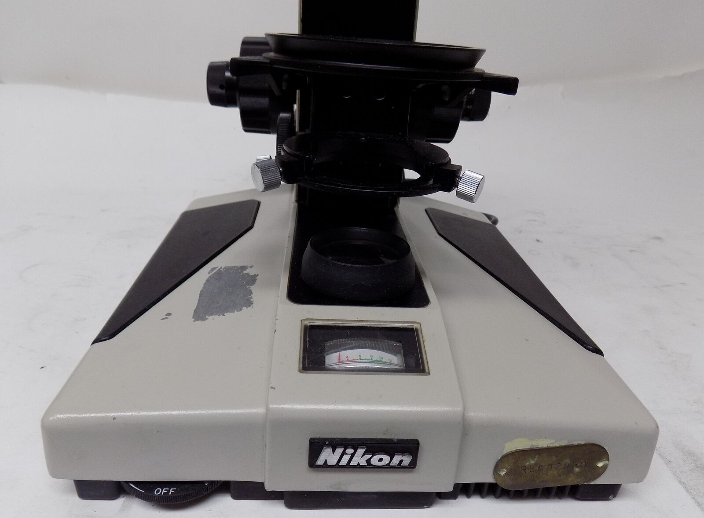

back

Nikon Optiphot MicroscopeThe Optiphot was introduced around 1978, inheriting some features from 1976 Metaphot and Biophot,with the same CF optics but more options and some cost reductions, including lower illumination power. Nikon Labophot Microscope #120432 *Power Tested*eBay item number: 294867880389Condition: Used Manufacturer: Nikon Model: 120432 Includes: 1 Labophot microscope Condition: Nikon Labophot Microscope #120432 *Power Tested*. Clean, good condition. Used. This item was previously owned and was working with other working equipment. See photos for exact item, condition, and details on model available. 
Received 9 June 2022Despite being advertised as a Labophot, it is an Optiphot, as embossed on its "Nikon Optiphot" arm plate.Plastic base pads are fine. Those tend to be problematic on Optiphot 2... The lamphouse was thankfully intact, having been removed as requested. Bulb lights; filament shows clearly in the field lens; missing 45mm diffusion filter... A cheap substitute was ordered from Amazon. Condenser carrier and rack are intact and working, but neither coarse nor fine stage focus knobs work. Bizarrly, power connecton for 12V bulb uses 110VAC plug and receptacle: ...although they match those on page 10 of the Optiphot instruction manual. Condenser carrier and rack are seemingly identical to those on the diaphot Optiphot 66; unlike the 66, its stop actually prevents running off its pinion. That carrier design seems odd; an upper U is rigid to the rack, with a screw that anchors condensers to it, but a lower spring-loaded ring with two adjusting screws that center condensers. Condenser and substage assemblies mount on a dovetail that is removable from the (broken) stage focus rack. FocusOptiphot-1 (or Labophot-1) fine focus differs from Optiphot-66:left: Optiphot-1 fine focus; right: Optiphot-66 fine focus, with fine focus shaft Metal planetary gear's small cog sticks thru brass gearcase  ...to drive a first coarse focus coaxial sun gear, which smaller cog drives the coarse focus planetary gear, which small cog drive the coaxial focus pinion sun gear. This Optiphot-1 focus had been already fiddled, missing its first coarse focus sun gear, and its brass planetary gearcase was only loosely threaded onto its coarse focus tube, coaxial with fine focus shaft. After tightening, Optiphot coarse focus knobs had about 1mm end play, and grease viscosity fails to resist stage drift; that rack runs in crossed bearings. The -66 coarse focus tube had an improvised retaining nut on the end without gears; its brass planetary gearcase is still tightly threaded to its coarse focus tube. Both focus blocks are the same 70mm width, so presumably matching fine focus shaft lengths. See Labophot Fine Focus for gear repair details. CondensersZeiss 0.9 flip-top condenser has smaller (42) dovetail than Nikon (45mm); got some advice.AO condensers have 48mm dovetail. Nikon swing-out condenser lacks working distance for 3mm epi plate over the stage. ELWD condenser arguably has too much working distance. abednego1995 explained how this Optiphot 100 series infinity turret differs from conventional finite Optiphots': Nosepiece turreteBay item: 173262463509Condition: Used A Nikon 5 space microscope turret that fits Microphot, Labophot and Optiphot for sure. It may fit other models. The turret is in excellent condition. purchased to address 2022 "Labophot" stage focus drift issues: Nikon Optiphot Microscope Stand Stage Lamp HouseItem: 325626052752Condition: For parts or not working received 9 May 2023 Filter CassetteItem: 235915678230Condition: Used Unit is missing filter in the ND2 slot, all other filter slots are populated. No issues with movement of filters. | ||||||||||||||
|
maintained by blekenbleu |